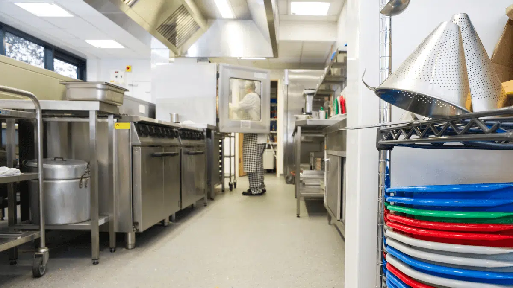

My Career Journey
- Lunch Lady
- EMT
- Paramedic
- International Disaster Response
- Web Development
The Punch Line Lunch Line
I have had a lot of interesting jobs in my life. Honestly, the list above is just a look at the last few twists in my career plans. I'm hoping that this next part of my journey will be a bit more like a straight away, at least for a little while. The first job I listed here is the job I took while I was in EMT school. I worked at a middle school outside of St. Louis as a lunch lady. The youngest lady in the kitchen by about 20 years, give or take. It was incredibly fun, and those ladies were the most entertaining coworkers around. My friends love to recall how I used to be a lunch lady. It gives us all a laugh. The job was easy and care free. It was a great stepping stone toward the next twist in the road.
I'm 911 now?
After I got through EMT school I went straight in Paramedic school. At that point I got a job working as an EMT in a rural community. There just wasn't enough time in my schedule for two jobs as I navigated both Paramedic school and my first days in the back of the rig. So i traded in my hair net for a surgical cap and practiced intubating patients in the OR to prepare for field intubation as a Paramedic. I had no idea what I was getting myself into. Then suddenly I was barreling toward an emergency with lights and sirens blazing and the vehicles in front of me parting like the Red Sea; and I remember stepping out of the truck onto the scene and thinking to myself with mild terror, "I'm 911 now?"

Ride the Chair
"You ride the chair you run the call." That's what they say in medic school. Essentially, it means when you are the lead on the call the ultimate decisions for patient care rest on you. There's doctor, no trauma team. There's you and your partner, and a driver if you call for more assistance. Before working in EMS I had no idea that there was any difference between paramedics and EMTs. Both work on the ambulance. Both respond to 911 calls. The main difference is that paramedics are required to get more training for advanced life support, and have a larger scope of practice. What this means is on critical calls the paramedic on scene rides the chair and runs the call. For me this has been a daunting reality. EMS is a scary and hard world. The things you see and the decisions you have to make are, at times, overwhelming. When I stepped into this role I had no idea the things I would be called upon to help with. It has been the weirdest, hardest, funniest, saddest, most frustrating, gut-wrenching, rewarding job that I have ever had. I've grown through it. But it's never been easy. I second guess myself and my decisions daily. This job was soon to take me places I had not imagined.

Distant Disasters
Since I was very small I have always wanted to help other people. I grew up learning about Jesus. He has always been my greatest example. And His example was this, He left His place, His comfort, to rescue a world in need. Emergencies don't just happen in St. Louis, and after working as a Paramedic for a time I was hired to work on an international disaster response team with Samaritan's Purse. Hurricaines, Earthquakes, wars, whatever disaster arises the purpose of this team is to go provide excellent medical care in the name of Jesus. It has been a beautiful things to be a part of. When I became a paramedic I had no idea of the places I would be able to go and the people I would be blessed to meet and work with as a result of this job.

Code is a Good Word
Fast forward to today. I'm working part time as a paramedic and teaching CPR and Advance Cardiac Life Support classes as I stumble my way through Launch Code. Nothing about This program is related to my experience or my expertise, and I regularly question whether this is something that I can do at all. I think Code is a good word for what we are learning because, for me it has been incredibly difficult to decypher. I'm still not sure if I will be able to cut it in this course, let alone this field. I have learned a lot from my time as a medic. And I don't want to lose the skills that I have developed. But for the sake of my mental health I have realized that I can't continue in this profession long term. It takes a person stronger than me to handle the pressure of emergencies for a whole career. I've worked in EMS for 9 years, and it has taken a toll on my mental health. Emergency medical skills don't readily transfer to many other career paths though, at least not outside the medical field. So I find myself starting over. I hope that this program gives me the tools I need to find success in a new career. I have had some very cool opportunities through my career thus far, but I'm really looking forward to finding a little bit more routine and normalcy in my life.